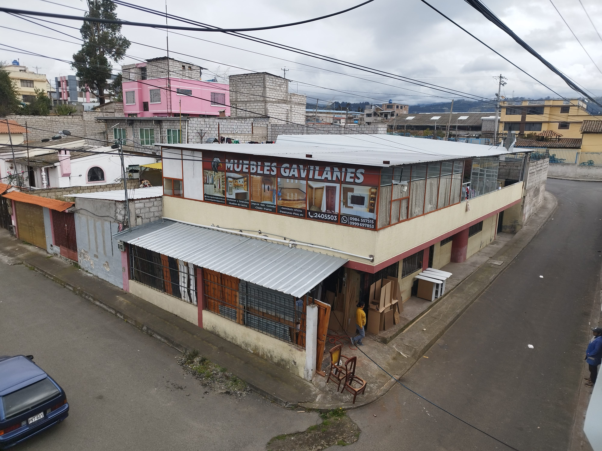
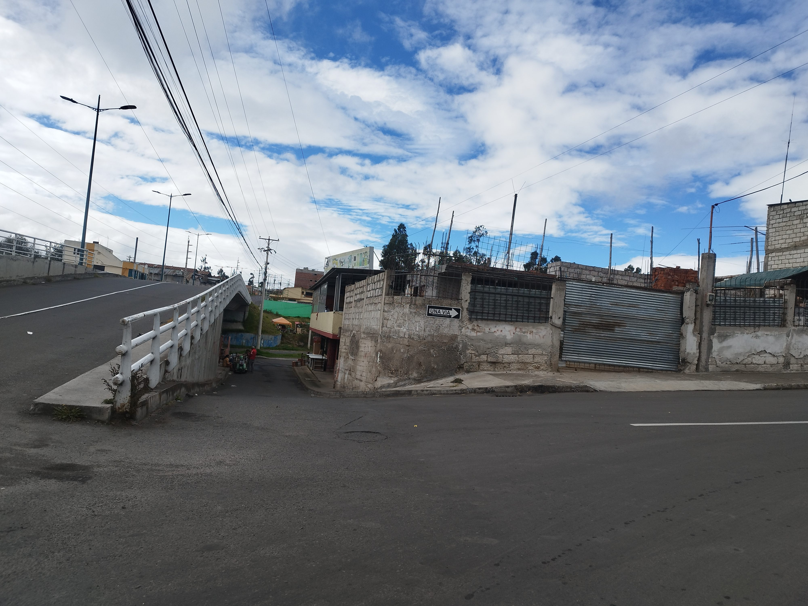
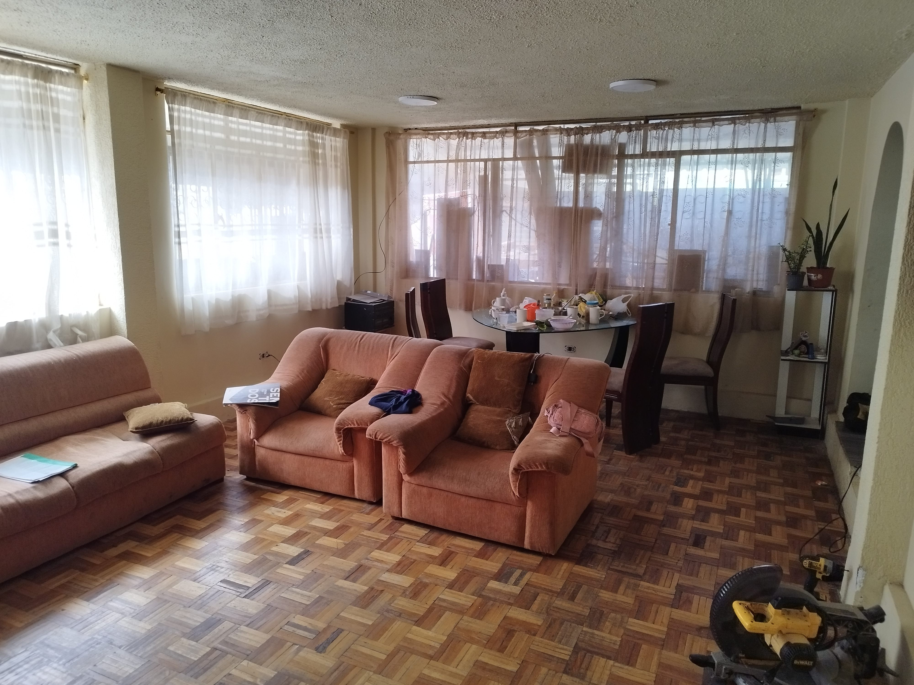
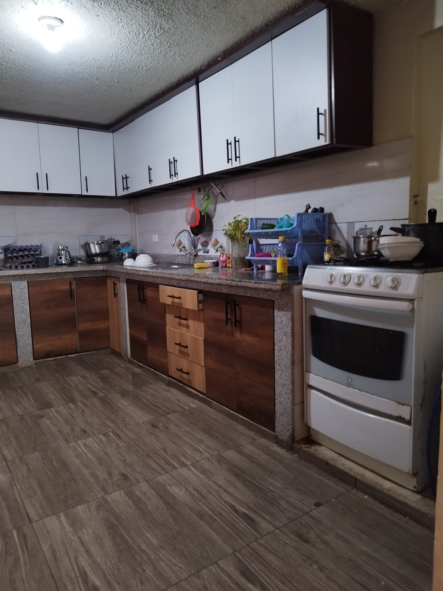
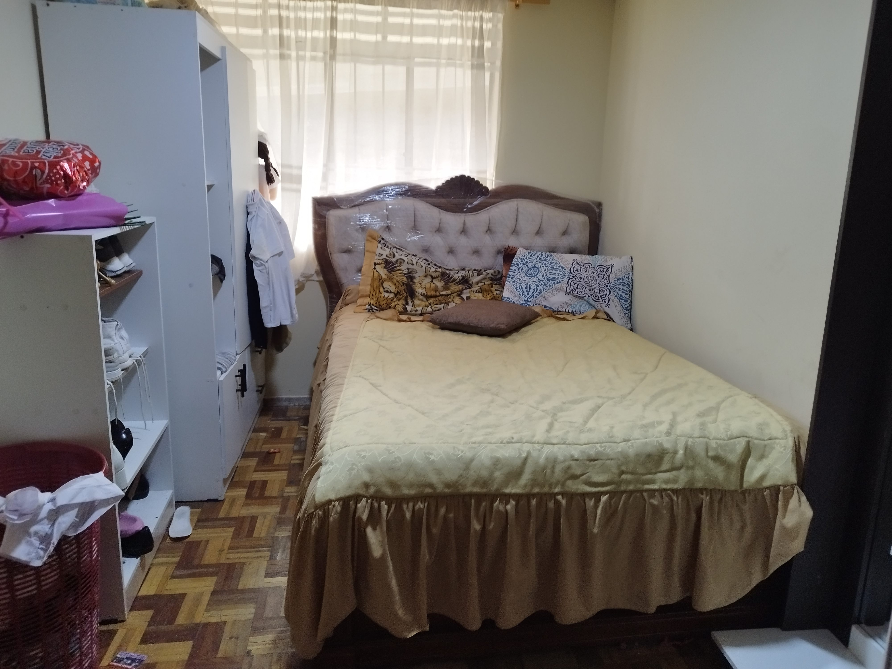
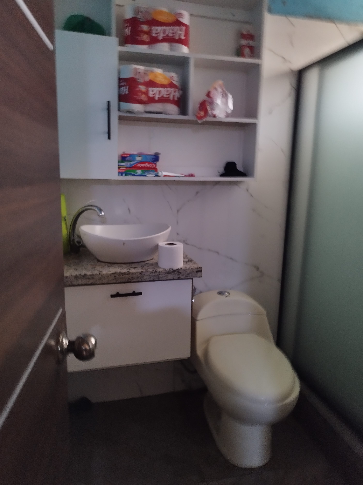
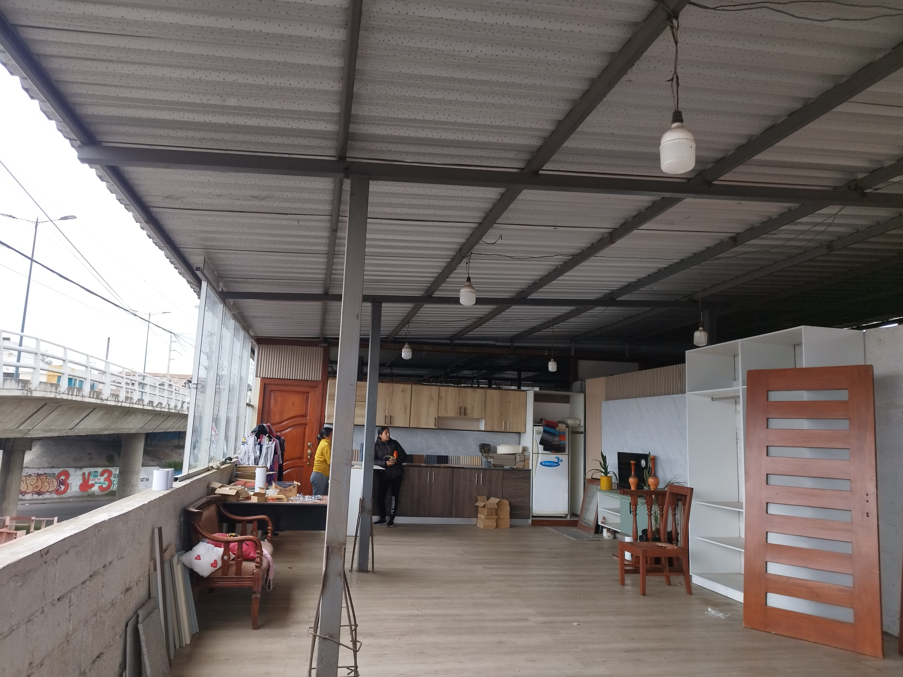
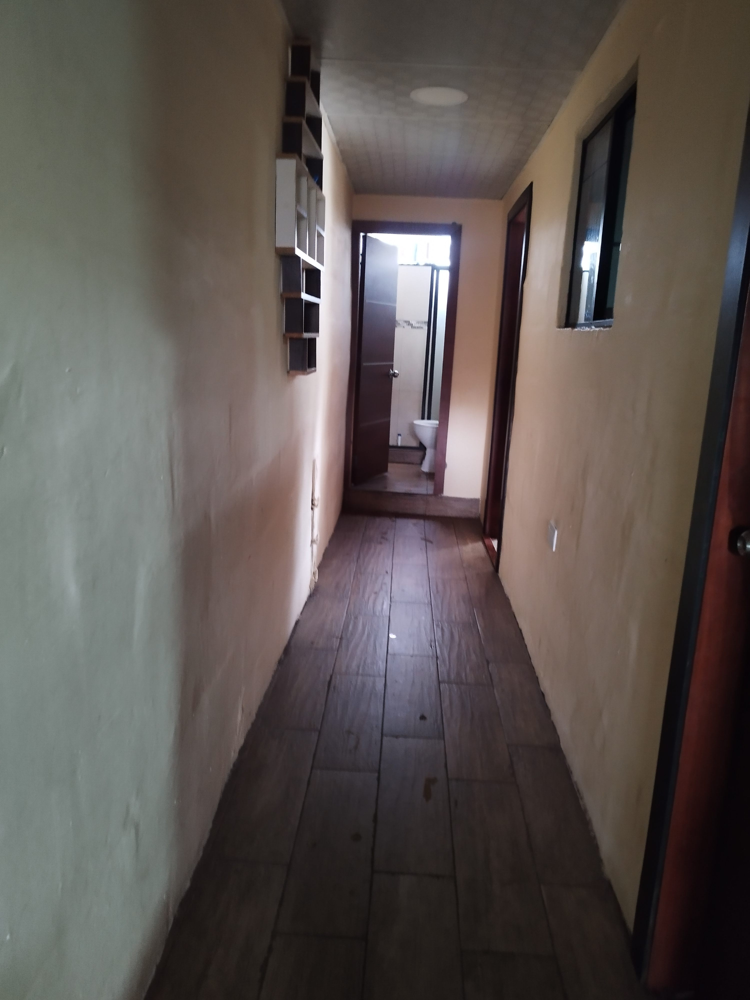
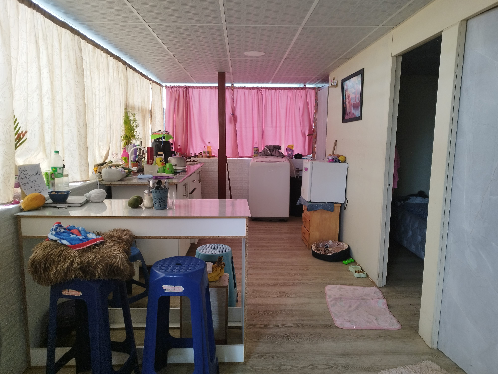

← volver al mapa
Casa - EC-RJ-155114
EC-RJ-155114 · casa · AMBATO, Tungurahua
★ Oferta destacada









Datos del remate
| Avalúo pericial | $93,311 |
| Tipo de bien | casa |
| Área de construcción | 355.95 m² |
| Área de terreno | 217.28 m² |
| Cantón / Provincia | AMBATO, Tungurahua |
| Dirección / Sector | parroquia: Pishilata. Avenida Real Audiencia de Quito y pasaje SN (sector la cárcel). provincia: tungurahua, cantón: ambato, parroquia: pishilata. avenida real audiencia de quito y pasaje sn (sector la cárcel), perteneciente a la parroquia pishilata, cantón ambato, provincia de tungurahua. |
| Señalamiento | Segundo Señalamiento |
| Fecha de remate | 2026-09-23 |
| No. de proceso | 18334202101376 |
Análisis vs. mercado
| Avalúo por m² | $262/m² |
| Mediana de mercado en la zona | $742/m² |
| Descuento vs. mercado | 64.6% |
| Comparables usados | 13 |
| Radio de búsqueda | 800 m |
| Puntaje | 92/100 |
Descripción completa del avalúo
la propiedad se encuentra emplazada dentro de un terreno de configuración regular, con una superficie de topografía plana. aquí se encuentra implantada una construcción mixta desarrollada en dos niveles, la cual alberga un taller destinado a actividades de fabricación de mobiliario en madera. en la parte posterior de la vivienda podemos encontrar un área de lavandería al igual que las gradas que conducen a la segunda planta.
en el terreno se encuentra implantada una construcción mixta destinada para vivienda, desarrollada en dos niveles. distribución de la vivienda • planta baja ? sala-comedor: con piso revestido de parquet y paredes con acabado de pintura sobre empastado. ? cocina: con piso revestido de cerámica. esta área cuenta con un mesón revestido de mármol y una alacena completa de madera ? baño: con piso y paredes revestido de cerámica. esta área cuenta con sus piezas sanitarias completas. ? dormitorio 1 y 2: con piso revestido de parquet y paredes con acabado de pintura sobre empastado. ? dormitorio 3: con piso revestido de parquet y paredes con acabado de pintura sobre enlucido. ? dormitorio 4: con piso revestido de cerámica y paredes revestidas de cerámica a media altura. ? cuarto dormitorio (parte de atrás de la vivienda): con piso revestido de parquet y paredes con acabado de pintura sobre enlucido. ? baño externo (parte de atrás de la vivienda): con piso y paredes sin revestimiento alguno, no cuenta con sus piezas sanitarias completas. ? cerrajería: puerta externa de madera con cubre puerta metálica, puertas interiores de madera, sus ventanas poseen cubre ventanas metálico y vidrio. dando un área total de construcción en la primera planta de 174.68 m2. esta área tiene una edad de construcción de aproximadamente 25 años, con un estado de conservación bueno. • planta alta la totalidad del área correspondiente a esta planta se encuentra techada mediante una estructura metálica con cerramiento superior de steel panel. esta cubierta cumple la función de resguardo y protección para los módulos habitacionales tipo mini departamento, así como para un ambiente destinado a dormitorio, ubicados en la parte inferior de la misma." ? cuarto-dormitorio: con piso revestido de cerámica y paredes con acabado de pintura sobre empastado. ? baño: con piso revestido de cerámica y paredes revestidas de cerámica. esta área cuenta con sus piezas sanitarias completas. ? mini departamento 1: cuen
provincia: tungurahua, cantón: ambato, parroquia: pishilata. avenida real audiencia de quito y pasaje sn (sector la cárcel), perteneciente a la parroquia pishilata, cantón ambato, provincia de tungurahua.
Límites: por el norte, con 9.94 metros, colindando con propiedad de luis alfonso galarza salazar. por el sur, con 9.75 metros, colindando con pasaje interno sin nombre. por el este, con 22.45 metros, colindando con puente de la avenida real audiencia de quito. por el oeste, con 21.78 metros, colindando con propiedad de fredy roberto reinoso santiana.
Clave catastral: 0128257002000
Periodo de posturas: 23/09/2026 00:00:00 a 23/09/2026 23:59:59
Dependencia jurisdiccional: UNIDAD JUDICIAL CIVIL CON SEDE EN EL CANTÓN AMBATO
Análisis de inversión
⚠ Dudosa — revisar bienTiene un taller de fabricación de muebles en el terreno; sin área registrada para evaluar precio.
A favor:
En contra:
Análisis elaborado a partir de la descripción del avalúo — no es asesoría legal ni financiera.
Esta ficha es una copia de lo publicado en el sitio oficial de remates
judiciales de la Función Judicial del Ecuador, para consulta — no
reemplaza el expediente judicial. remates.funcionjudicial.gob.ec no da
un link propio por remate, por eso se generó esta página aparte.
Antes de ofertar, el expediente debe revisarlo un abogado.